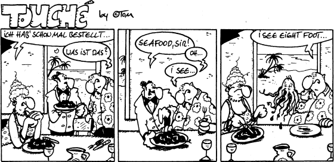

40% of box width:

multiple identical images jpg:
multiple identical images gif (will be recoded to png by dompdf):
multiple identical images png:
local png image with alpha channel:
Attention!
For external images to work, the following configuration is required:
dompdf_config.inc.php :
define("DOMPDF_ENABLE_REMOTE", true);
external png Image with alpha channel:

external image, dynamically created with id in url parameter at end of parameter(.jpg):

external image, dynamically created with id in url parameter not at end of parameter (.jpg):

external Image without file extension (.gif):
Background images
- no-repeat position:default
- no-repeat position:left-center
- no-repeat position:left-bottom
- no-repeat position:right-bottom
- no-repeat position:center-center
- no-repeat position:50%-50%
- no-repeat position:4px-8px
- no-repeat position:-4px--8px
- no-repeat position:32px-0px
- no-repeat position:0px-8px
- repeat-y position:default
- repeat-y position:left-center
- repeat-y position:left-bottom
- repeat-y position:right-bottom
- repeat-y position:center-center
- repeat-y position:50%-50%
- repeat-y position:4px-8px
- repeat-y position:-4px--8px
- repeat-y position:32px-0px
- repeat-y position:0px-8px
- repeat-x position:default
- repeat-x position:left-center
- repeat-x position:left-bottom
- repeat-x position:right-bottom
- repeat-x position:center-center
- repeat-x position:50%-50%
- repeat-x position:4px-8px
- repeat-x position:-4px--8px
- repeat-x position:32px-0px
- repeat-x position:0px-8px
- repeat position:default
- repeat position:left-center
- repeat position:left-bottom
- repeat position:right-bottom
- repeat position:center-center
- repeat position:50%-50%
- repeat position:4px-8px
- repeat position:-4px--8px
- repeat position:32px-0px
- repeat position:0px-8px
- no-repeat position:32px-8px
- no-repeat position:32pt-8pt
- no-repeat position:32px-32px
- no-repeat position:-16px--16px
- no-repeat position:default image:url(http://www.dokuwiki.org/lib/images/fileicons/html.png) [image remote]
- no-repeat position:default image:url(images/png.png) [image in subfolder]
- no-repeat position:default image:url(html.png) [image in same folder]
- no-repeat position:default image:url(html.png) [image in same folder] Added very long description, to see if non repeating background image is repeated after a line break. blah, blah, blah, blah, blah, blah, blah, blah, blah, blah, blah, blah, blah, blah, blah, blah, blah, blah, blah, blah, blah, blah, blah, blah, ...
- no-repeat position:default image:url(/absimagetest/smiley.png) [abs image ]
Attention!
For absolute image references to work, the file (dompdf)/www/test/images/smiley.png must be copyied exactly to (virtual web server root)/absimagetest/smiley.png
paragraph link no-repeat position:default
paragraph text no-repeat position:left-top; more text text more text text bla bla sdfjkhs sdfsjksdfks sdfkjsfsf skjfh ksjdfhsd
paragraph text no-repeat position:left-center; more text text more text text bla bla sdfjkhs sdfsjksdfks sdfkjsfsf skjfh ksjdfhsd
The PHP 5 HTML to PDF converter